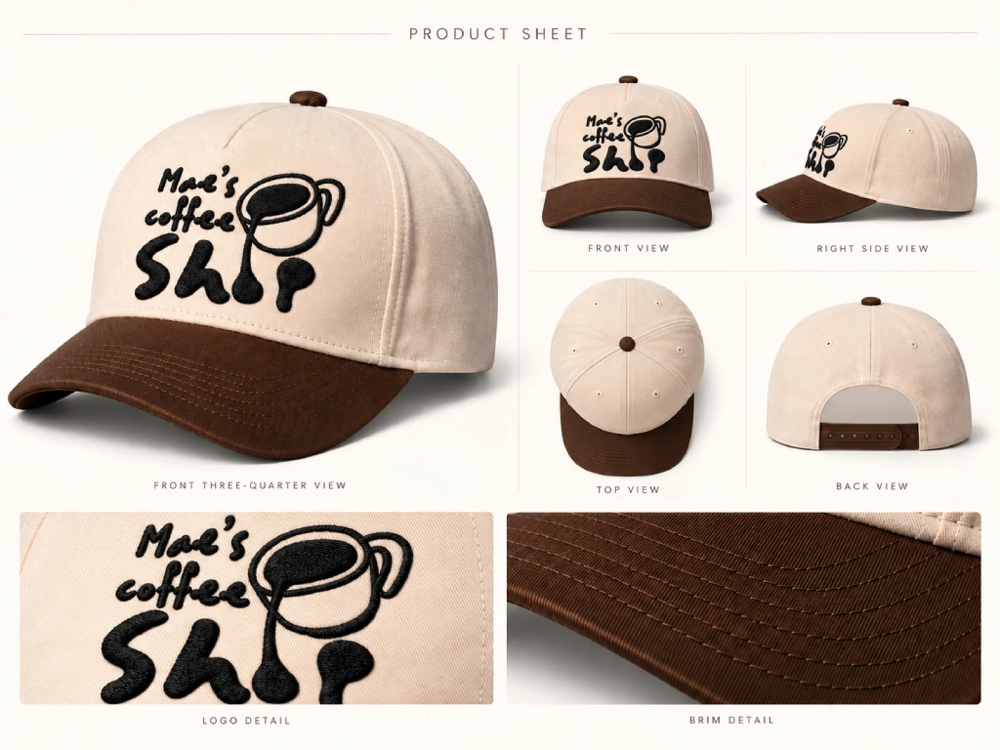
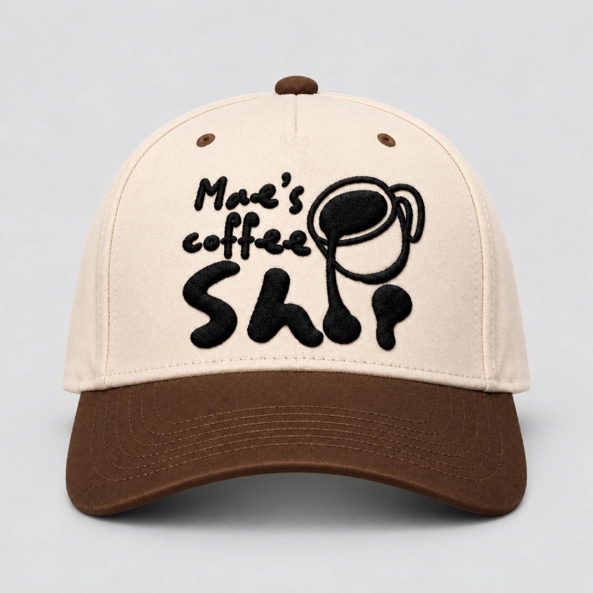
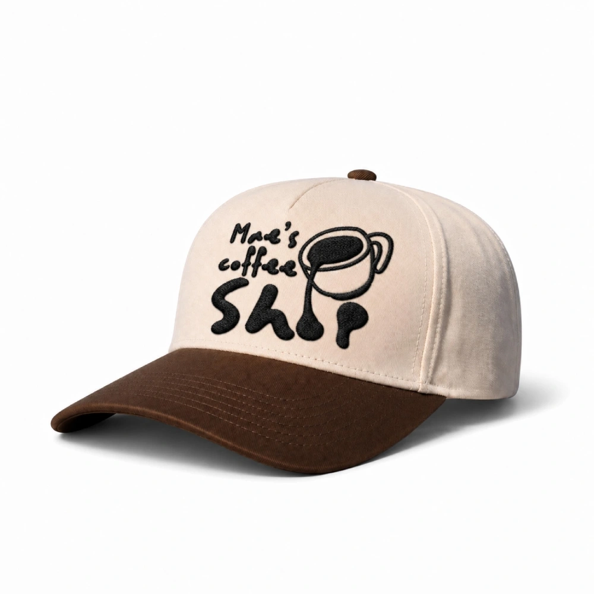

Videos
Mae's Coffee Shop Hat
A cinematic AI-generated process video following the making of a two-tone coffee shop cap and the embroidery of Mae's Coffee Shop logo.

(01) — The process
The Process
I used the cap detail sheet, Mae's Coffee Shop logo and finished hat images to build reference shots in ChatGPT. I animated the production and embroidery sequence in Google Flow, then edited the clips together in CapCut.
(02) — The references
The References

Front view, used to guide the logo placement and embroidery details.

Three-quarter view, used to keep the cap's shape, colours and stitching consistent.
(03) — The final cut
The Final Cut
I trimmed and sequenced the generated clips in CapCut into one cinematic video, following the hat's production and logo embroidery through to the finished cap.
The final edited video.